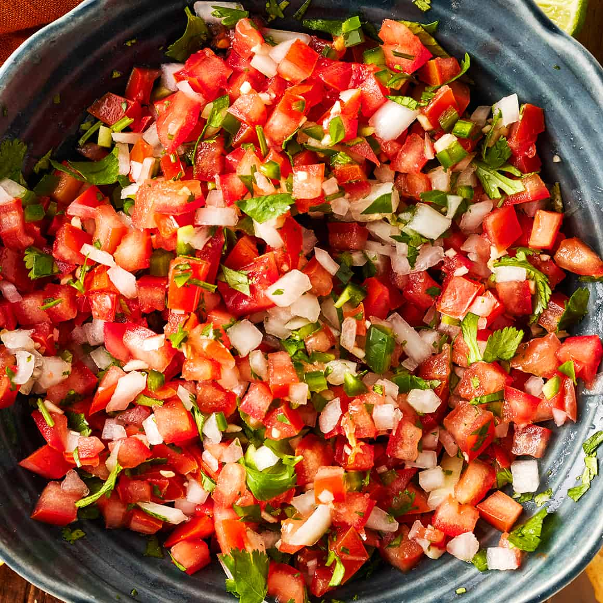

Home
Pico De Gallo

Description
A classic "dice the ingredients and toss them in a bowl" recipe. For best flavor, wait at least an hour after making to eat!
Ingredients
- 6 Fresh Roma Tomatos, diced
- 1 half Diced White Onion
- Cilantro, roughly chopped
- The Juice of 1 Lime
- Salt
- Jalapeno
Steps
- Place diced Tomatos, Onion, Cilanto and Jalapeno in a bowl and mix
- Add Lime Juice and Salt to taste
- Let rest for at least one hour
- Serve